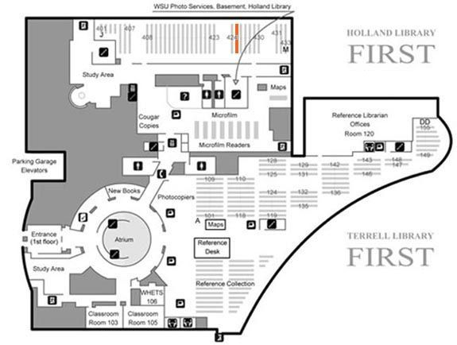

Mouse over the map of clickable areas to access images.

Stack #425
Subclass KB Religious law in general. Comparative religious law. Jurisprudence
Subclass KBM Jewish law
Subclass KBP Islamic law
Subclass KBR History of canon law
Subclass KBU Law of the Roman Catholic Church. The Holy See